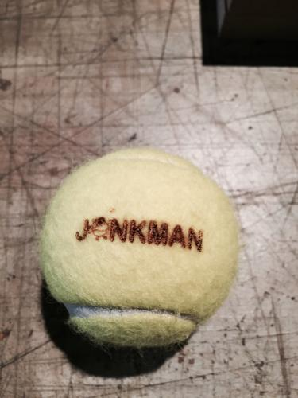
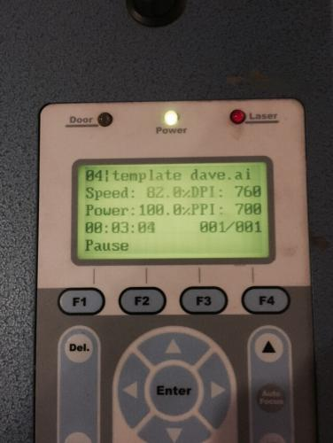

Me and my tennis teacher wanted to test if it is possible to laser a tennisball. Every year my tennis teacher Bernard writes his logo on every tennisball he is going to use in his tennis lessons. It takes too much time, that is why we tested to laser the logo on the tennisball, to see if that is quicker. The result was beautiful, but it was not faster then doing it by hand.
It was a nice experience and they look awsome. Can't wait to play a match with those brand new lasered tennisballs! If you want to try to do this also, Use the focus of the machine on top of the tennisball and my settings were as follows: Power: 82, Speed: 100 and PPI: 700. Don't forget to test it first on an old tennisball. Success!


This work is licensed under a Attribution Share Alike Creative Commons license